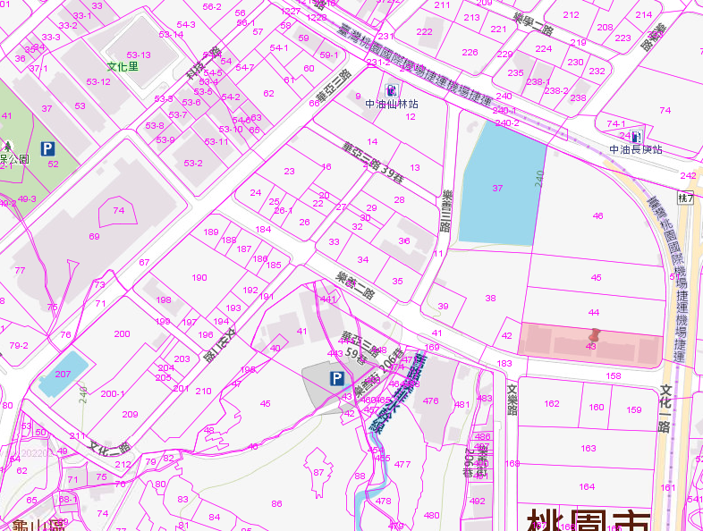

<!DOCTYPE html>
<html lang="en-us">

<head>
	<meta charset="utf-8">
	<meta http-equiv="X-UA-Compatible" content="IE=edge">
	<meta name="viewport" content="width=device-width, initial-scale=1">
	<meta name="generator" content="Hugo 0.96.0" />

	<title>My New Hugo Site - </title>


	<link rel="stylesheet" href="https://fonts.googleapis.com/css?family=Roboto">
	<link href="https://sarukyaputen.github.io//css/bootstrap.min.css" rel="stylesheet">
	<link href="https://sarukyaputen.github.io//css/strange-case.css" rel="stylesheet">


	<!--[if lt IE 9]>
	<script src="https://oss.maxcdn.com/html5shiv/3.7.3/html5shiv.min.js"></script>
	<script src="https://oss.maxcdn.com/respond/1.4.2/respond.min.js"></script>
	<![endif]-->


	<link href="/index.xml" rel="alternate" type="application/rss+xml" title="My New Hugo Site" />
</head>

<body class="">


	<div class="container-fluid">
		<div class="row">
			<div class="col-sm-4 col-md-3 col-lg-3 sidebar">


				<div class="sidebar-content">

					<a href="https://sarukyaputen.github.io/">
						<h1>猴子隊長</h1>
					</a>
					<p></p>


					<ul class="sidebar-menus sidebar-icons">

					</ul>

					<ul class="sidebar-menus">

					</ul>

					<div class="sidebar-recent hidden-xs">
						<p>Recent Posts:</p>
						<ul>

						</ul>
					</div>


					<p class="copyright">&copy; 2022. All rights reserved. </p>
					<p class="attr">Powered by <a href="http://gohugo.io">Hugo</a> &amp; <a
							href="https://github.com/ExchangeRate-API/strange-case">Strange Case</a> (inspired by <a
							href="https://github.com/poole/hyde">Hyde</a>).</p>

				</div>


			</div>
			<div class="col-sm-7 col-sm-offset-4 col-md-6 col-md-offset-3 col-lg-5 col-lg-offset-3 content">


				<div class="post">

					<div class="post-heading">
						<h1><a href="https://sarukyaputen.github.io/post/blog2/">Blog2</a></h1>
						<span>Mar 31, 2022</span>
					</div>


				</div>

				<div class="post">

					<div class="post-heading">
						<h1><a href="https://sarukyaputen.github.io/post/blog/">A7重劃區</a></h1>
						<span>Mar 31, 2022</span>
					</div>

					<h1 id="this-is-an-h1-tag">This is an
						<!-- raw HTML omitted --> tag
					</h1>
					<pre><code>```python
這邊是程式碼

def index()
    print()
```
</code></pre>
					<ul>
						<li>Item 1</li>
						<li>Item 2
							<ul>
								<li>Item 2a</li>
								<li>Item 2b</li>
							</ul>
						</li>
					</ul>
					<h2 id="this-is-an-h2-tag">This is an
						<!-- raw HTML omitted --> tag
					</h2>
					<h6 id="this-is-an-h6-tag">This is an
						<!-- raw HTML omitted --> tag
					</h6>
					<!-- raw HTML omitted -->
					<hr>
					<p>本篇將教大家如何將 LINE Bot 一鍵自動部署到 Heroku。本篇所使用的程式範例 code 都放置於 GitHub – hsuanchi/Flask-LINE-Bot-Heroku
						上，有興趣歡迎給星和 git clone 客製成自己的 LINE Bot 唷！
						**99=</p>
					<ul>
						<li><input checked="" disabled="" type="checkbox"> This is a complete item</li>
						<li><input disabled="" type="checkbox"> This is an incomplete item</li>
					</ul>
					<p></p>
					<p>Channel secret
						Channel access token</p>
					<!-- raw HTML omitted -->
					<!-- raw HTML omitted -->
					<p>文章目錄
						一. 自動部署 Heroku
						二. 更新 LINE webhook
						三. 測試 LINE Bot 機器人
						四. 如何客制成自己的 LINE-Bot
						一. 自動部署 Heroku
						首先我們先做一個最簡單的 Echo Bot (也就是你跟他說什麼，他都會回覆一模一樣的話給你) 點擊下面紫色的 Deploy to Heroku 按鈕</p>
					<p>Deploy to Heroku
						點擊 Deploy to Heroku 按鈕後：</p>
					<p>會進入 Heroku 頁面，使用的範例 code 是這份GitHub – hsuanchi/Flask-LINE-Bot-Heroku，之後有興趣可以自行更換
						輸入專案名稱，這邊將會成為未來網址的一部分像是https://xxxxxxx.herokuapp.com/
						輸入在 LINE Developers 取得的 Access Token 和 CHANNEL_SECRET</p>
					<p>然後等待 Heroku 建立部署，完成後會出現以下畫面，綠色勾勾就代表部署成功囉！</p>
					<p>二. 更新 LINE webhook
						將剛剛部署完後的 heroku 網址填入 LINE Developers 的 Webhook URL，就完成設定囉！</p>
					<p>(這邊請填寫自己的 Heroku URL 喲)
						三. 測試 LINE Bot 機器人
						這時候我們密機器人，如果出現 echo 的狀態，就代表部署成功囉！</p>
					<p>四. 如何客制成自己的 LINE-Bot
						首先將這份 LINE-Bot template Fork 回自己的 GitHub 專案
						修改 Flask-LINE-Bot-Heroku/app.py/ 內的程式碼
						修改 README.md 內的路徑 (如下圖)，改成自己的專案位置
						點擊 Deploy to Heroku 按鈕完成部署</p>


				</div>


				<div class="text-center">

				</div>

			</div>
			<div class="col-sm-1 col-md-3 col-md-4">
			</div>
		</div>
	</div>


	<script src="https://ajax.googleapis.com/ajax/libs/jquery/1.12.4/jquery.min.js"></script>

	<script src="https://sarukyaputen.github.io//js/bootstrap.min.js"></script>

</body>

</html>